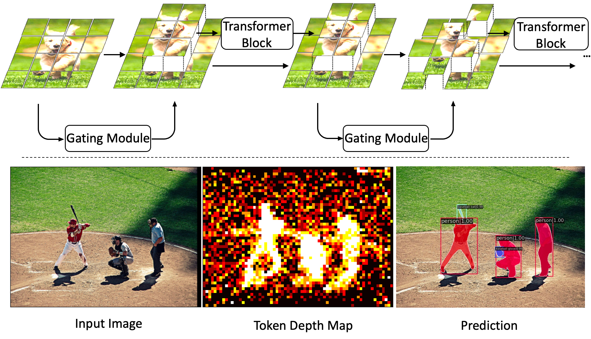
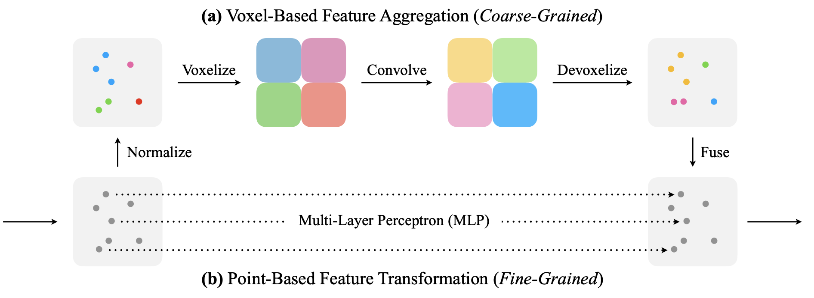
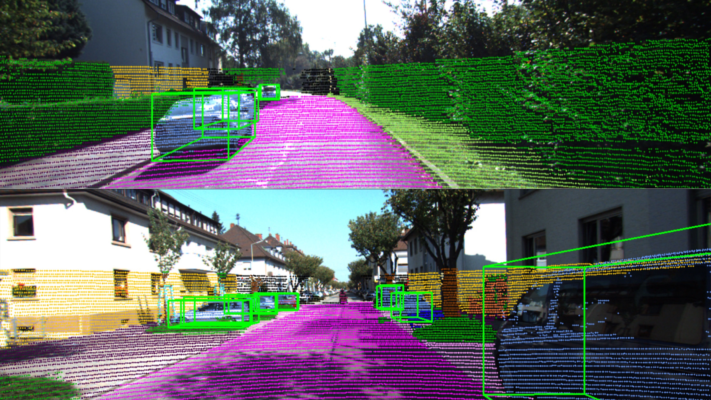

Yifei Liu

Hello World, I am a Research Assistant in ETH AIT Lab led by Prof. Otmar Hilliges with a current research focus on 3D human-object interaction reconstruction from a single in the wild image.
Before that, I did my master thesis at Robotics and Perception Group @ University of Zurich led by Prof. Davide Scaramuzza and worked on Computer Vision and Deep Learning with a focus on efficient inference and sparse computation, by means of pruning redundant tokens for Vision Transformers.
Even before, I obtained my BSc degree in Mathematics @ University of Science and Technology of China.
news
| Oct 26, 2023 | Our paper Revisiting Token Pruning for Object Detection and Instance Segmentation is accepted by IEEE/CVF Winter Conference on Applications of Computer Vision (WACV) 2024. |
|---|---|
| May 1, 2023 | I started a new position as a Research Assitant in AIT lab @ ETH, and will work on 3D human-object interaction reconstruction from in the wild images. |
| Sep 16, 2022 | I started my masters thesis in Robotics and Perception Group focusing on Sparse Computation with Vision Transformers. |
| Jun 20, 2022 | Our semester’s course project An Offline Python SLAM using COLMAP in the 3D Vision Course at Computer Vision and Geometry group in ETH got full-grade and presented in the poster session! |
| Sep 7, 2021 | I joined the Robotics and Perception Group as a master student on project Efficient Spatio-Temporal Processing of Event Data. |
| Jul 3, 2021 | We got the 2nd place in the Competition of 3D Object Detection based on Lidar Points from the ETH Course Deep Learning for Autonomous Driving |
| Jun 15, 2021 | I win the 1st place in the final written coding exam in Informatik II among more than 250 students |
| Sep 1, 2020 | I started my masters study in University of Zurich (UZH) with a major of Data Science and minor of Informatics. |
Publications
|  | Yifei Liu, Mathias Gehrig, Nico Messikommer, Marco Cannici, Davide Scaramuzza Pruning tokens for Vision Transformers to accelerate inference speed on dense tasks. |
Projects
 | Semester's Course Project in 3D Vision , Computer Vision and Geometry Group, ETH Zurich Supervised by Paul-Edouard Sarlin and Marc Pollefeys TL;DR: An offline python SLAM using COLMAP and ORB-SLAM which is robust, accurate, and highly extensible. |
|  | Master Project at Robotics and Perception Group, UZH Supervised by Mathias Gehrig, Nico Messikommer and Davide Scaramuzza TL;DR: A point-voxel-mixed model for efficient spatio-temporal processing of event data for classification and optical flow. |
|  | Course Project in Deep Learning for Autonomous Driving Multi-task Learning for semantic segmentation, depth estimation and 3D object detection for autonomous driving scenes. |
 | Collection of Demos Here are some demos collected from my courses. Please note that I am not an expert in these fields, and am merely recording some experience I found interesting to share. |